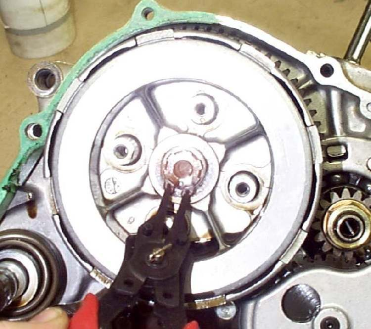

A wet multi-plate clutch is a stack of friction plates (with a lining) and plain steel plates, squeezed together by springs. Friction plates wear thin, springs get weak and steel plates warp from heat. This page is an assessment and hand-off: it tells you what to rule out first, what the workshop will open and measure, and what to ask for. Opening the clutch needs special holding tools and a new cover gasket, so it is not a home job.
Safety
- Do not keep riding a slipping clutch. It overheats the oil and the debris from burnt plates goes round the engine.
- Hot oil burns. The workshop should drain the oil cold or warm, not hot.
- Spring bolts must come out evenly, a little at a time, in a criss-cross order. Removing them one by one leaves the last bolt holding all the spring force and can break the lifter plate.
Rule these out first (rider or home)
- Free play correct: Adjust clutch lever free play.
- Cable slides freely, lever returns: Replace the clutch cable.
- Oil level correct and the right grade for a wet clutch: Check the engine oil level. The K-Light manual says oil level and viscosity affect clutch action, so check them before opening the clutch. Some car oils are not suitable for a wet clutch; use the type in your manual.
- If all are good and the fault remains, the clutch needs opening.
What the workshop will do
- Drain the engine oil. On the K-Light the engine stays in the frame.
- Remove the right-hand engine cover and the clutch spring bolts, evenly and in a criss-cross order.
- Lift out the lifter plate, springs, release bearing and pushrod or push lever.
- Hold the clutch with a holding tool and remove the centre nut, then the hub, plates, pressure plate and outer basket. Keep the plates in order; their order and the way they face both matter.
- Measure each friction plate with a vernier in several places. K-Light 125: replace below 2.6 mm (standard 2.9 to 3 mm).
- Measure each spring's free length. K-Light 125: replace below 34.2 mm (standard 35.45 to 36.5 mm). If one spring is short, replace them all.
- Lay each steel plate on a surface plate and try a feeler gauge under it to check for warp. Use the limit in your bike's manual; the K-Light manual does not give one.
- Check the basket slots and hub splines for notches. Small burrs can be dressed with a file; deep notches mean a new part, because they make the plates catch and cause judder and drag.
- Check the pressure plate face, the release bearing (it should spin smoothly) and the pushrod.
- Fit new parts as a complete set: friction plates, steels if warped, and springs. Soak new friction plates in clean engine oil before fitting.
- Refit with a new cover gasket, tighten the nut and bolts to the manual's torques, refill the oil and set the lever free play.
What to ask for
- Each plate and spring measurement written next to the limit, and the old parts shown to you.
- Whether the basket, hub and release bearing were checked, and which oil was used.
Do not attempt at home without the manual
- Do not hold the clutch by jamming a screwdriver or the gears; use the holding tool. Do not mix old and new springs.
If it did not fix the problem
- Still slipping with new plates: check the oil type again and the free play, and ask the workshop to check the lifter is not sticking.
- Still dragging: Clutch drags; the workshop should check the basket, hub and pushrod.
- Noise remains: Rattle or whir from the clutch.
Reference values (K-Light 125)
| Item | Value | Source |
|---|---|---|
| Friction plate thickness | Standard 2.9 to 3 mm; limit 2.6 mm | K-Light 125 manual, PDF pp. 222, 225 |
| Clutch spring free length | Standard 35.45 to 36.5 mm; limit 34.2 mm | K-Light 125 manual, PDF pp. 222, 224 |